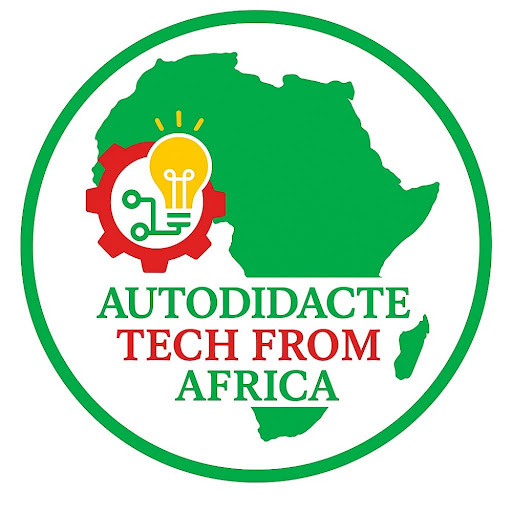

Un parcours structuré
Sept étapes progressives pour construire des bases solides et mesurables.

Autodidacte Tech From AfricaDéveloppez des compétences professionnelles grâce à un parcours structuré, des projets concrets et un mentorat exigeant, au sein d'une communauté africaine engagée.
« Seul, on va plus vite ; ensemble, on va plus loin. » Proverbe africainDécouvrir le parcours
Autodidacte Tech From Africa est un parcours d'excellence qui transforme la motivation en compétences concrètes. Nous accompagnons des profils déterminés dans une progression structurée, exigeante et orientée vers des réalisations professionnelles.
Pour construire cette progression, nous nous appuyons sur les ressources pédagogiques, les projets pratiques et les certifications officielles de freeCodeCamp. Ce socle reconnu permet de former des ingénieurs logiciels et des analystes capables de résoudre des problèmes réels, de collaborer avec rigueur et de contribuer durablement à l'innovation en Afrique et au-delà.
Ressource pédagogique de référence Découvrir le parcours officiel freeCodeCampSept étapes progressives pour construire des bases solides et mesurables.
Des objectifs clairs, une discipline constante et des retours réguliers.
Des compétences conçues pour répondre aux enjeux technologiques d'ici et d'ailleurs.
Avant de vous engager, découvrez notre socle d'apprentissage basé sur l'excellence du cursus FreeCodeCamp.
Structure de données, logique de programmation et développement frontend.
Construisez des interfaces modernes et interactives avec les bibliothèques frontend.
Apprenez Python pour l'automatisation, l'analyse de données et le développement backend.
Concevez des bases de données relationnelles et maîtrisez SQL.
Développez des serveurs, des API et des applications web robustes.
Parcourez le cursus complet pour consolider vos compétences Full-Stack.
Chaque vendredi soir, les apprenants se retrouvent pour faire le point sur leur progression dans le cursus FreeCodeCamp. Ces séances de mentorat transforment le travail individuel en un parcours structuré, mesurable et orienté vers la maîtrise progressive des compétences. Elles permettent de :
La présence, la participation active et la progression régulière sont indispensables pour rester dans le programme. Toute absence répétée ou absence d'avancement pourra entraîner une réévaluation de la candidature.
Développeur Python & Data Analyst Autodidacte
Passionné par la donnée et l'ingénierie logicielle, j'ai bâti mon expertise à travers des certifications rigoureuses (DataCamp, Udacity AWS, Stanford Code in Place). Conscient des défis de l'apprentissage en solitaire, j'ai créé cette plateforme pour structurer, guider et propulser la prochaine génération de talents tech africains.
L'intégration à la communauté est sélective. En rejoignant le programme, chaque apprenant s'engage à suivre le cursus complet, à respecter l'ordre des étapes et à progresser avec régularité. Remplissez ce formulaire avec soin afin de nous présenter votre parcours, vos objectifs et votre motivation.